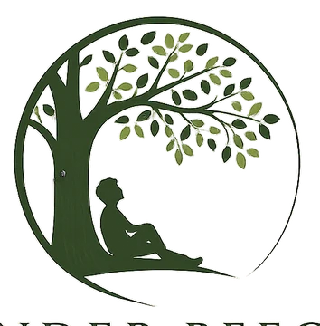

庭木剪定・刈込
透かし剪定を中心に、風通しと見た目を整えます。庭木1本からご相談いただけます。
- 剪定 1〜2m1,000円〜
- 剪定 2〜3m4,000円〜
- 刈込 1〜2m1,000円〜

植木屋 アンダービーチ川越市の造園・植木屋
川越市下赤坂を拠点に、庭木1本の剪定から、伐採・草刈り・防草シート施工まで対応しています。専門業者へ連絡する前に料金の目安を確認でき、料金の目安を確認してからご相談いただけます。
庭木が伸びすぎた、雑草の管理が大変、庭をすっきりさせたいといったお悩みに合わせて作業します。
透かし剪定を中心に、風通しと見た目を整えます。庭木1本からご相談いただけます。
大きくなりすぎた庭木の伐採や、再び芽が出にくくするための伐根に対応します。
短時間で行う機械除草と、根から取り除く人力除草に対応します。
雑草管理の負担を減らしたい場所に施工します。
造園会社へ頼むほどか分からない小さな作業でも大丈夫です。料金目安を公開し、庭木1本から相談できる形にしています。まずは作業内容と大きさを入力して概算をご確認ください。
所沢市、狭山市、ふじみ野市、富士見市、入間市、日高市など埼玉県内のほか、東京都西部・多摩地域を中心に幅広く対応しています。
サイトの料金シミュレーターで最低料金の目安を確認できます。
サイト上の料金目安を確認してから、お電話でご相談いただけます。
はい。庭木1本からご相談いただけます。
大丈夫です。作業内容と金額をご確認いただいたうえでご検討ください。
基本的に川越市内は対応エリアです。作業場所や内容により確認が必要な場合があります。
枝葉は量によって変わります。軽トラック1台分で約10,000円が目安です。
正式な料金は、作業条件や必要に応じた現地確認のうえで分かりやすくご案内します。